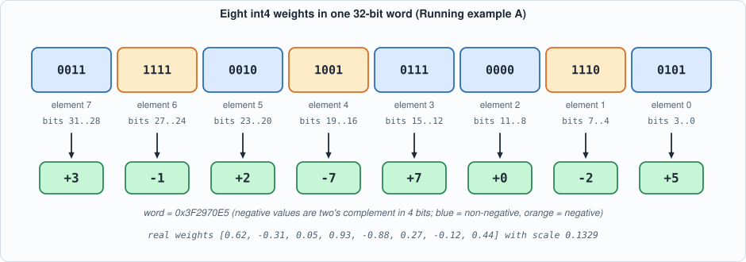
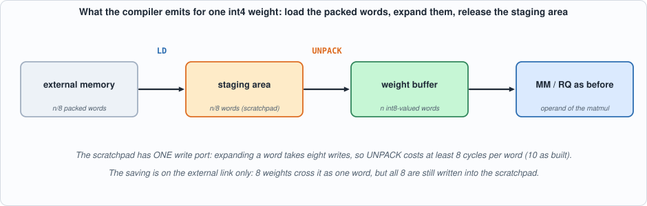
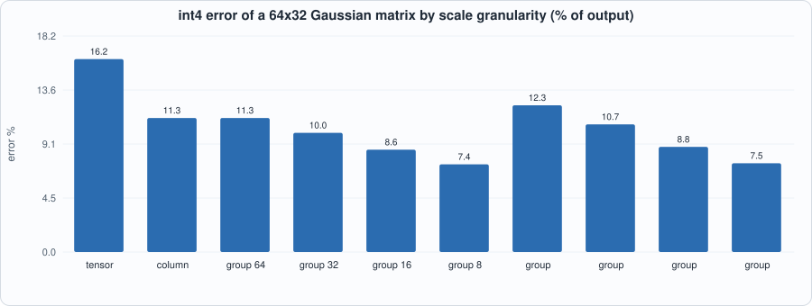
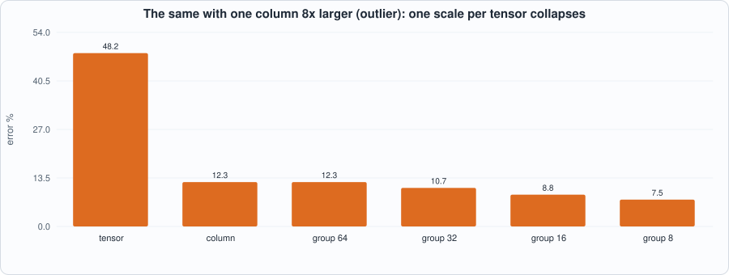
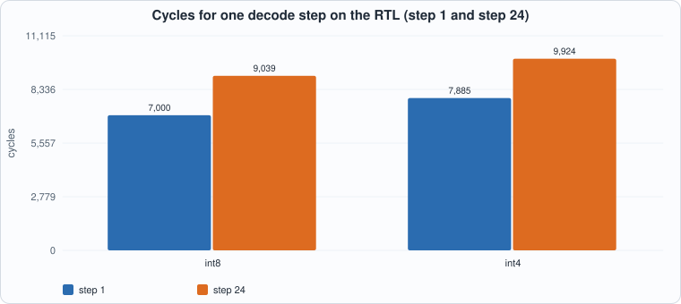
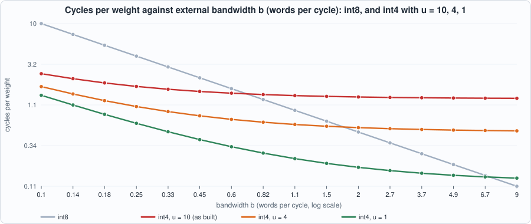

13. int4 Weight-Only Quantization¶
About the animals in this picture and where they are standing
- Domestic goat (Capra hircus) descends from the bezoar ibex and is among the oldest domesticated animals. There are on the order of a billion of them, kept for milk, meat, fibre and as pack animals.
- Bezoar ibex (wild goat) (Capra aegagrus) lives from Turkey and the Caucasus through Iran to Pakistan. It is the wild ancestor of the domestic goat, which people began keeping some ten thousand years ago.
- Nubian ibex (Capra nubiana) lives in the rocky, arid hills of north-east Africa and the Arabian Peninsula, from the Sinai and Egypt south to Sudan and Ethiopia. Its coat matches the desert rock, and the males' ridged horns sweep back like a sickle.
The scene is imaginary: it is set on the Moon: gravity about a sixth of Earth's, and an Earth hanging in the black sky. The animals are stylised drawings, shown where they could not live, for effect.
What you will see: weights stored in four bits instead of eight, end to end. A new compiler option, weight(..., bits=4), packs eight weights into one 32-bit word; the compiler emits an UNPACK instruction (hardware built in this chapter's circuit) after the load; the same tiny language model of Chapter 12 decodes the same 24 tokens with int4 weights, on the RTL, in both simulators. Along the way you will measure what four bits cost in accuracy, how much external traffic they save, and, honestly, why on this chip they do not make a token faster.
What you need to know first: Chapter 3 (quantization), Chapter 7 (the instruction set, the vector unit), Chapter 11 (the compiler) and Chapter 12 (the tiny model). Appendix C (number formats) is the primer for two's complement and scales.
What this chapter builds: rtl/ga2_vec.v (the ga2_unp unit), model/unpack_progs.py, the int4 additions to model/capra.py (weight(bits=4), scale range/7, packing, UNPACK emission), wbits options in model/capra_tests.py and model/tiny_lm.py, tools/ch13_run.py, tools/mut_ch13.py and tools/mut_ch13_compiler.py, and the running examples tools/ch13_example_a.py and tools/ch13_example_b.py.
Where this chapter sits
Part 6 is a set of case studies. Each takes a technique that real LLM accelerators use, adds it to the chip and the compiler, and then measures it with the book's usual discipline: an independent model, self-checking testbenches, and mutation tests. This first case study is the one with the largest effect on real systems: shrink the weights.
Why four bits¶
Chapter 9's roofline said it in one line: at batch 1 a decode step reads every weight once and does about one multiply per weight, so the speed is set by bytes of weights per second. Halve the bytes per weight and the ceiling doubles. The measured ceiling on a 7-billion-parameter model at 1 TB/s was 66, 124 and 219 tokens per second for fp16, int8 and int4 weights (derived in Chapter 9, not measured on this chip). That is why production inference stacks ship weights at 4 bits.
Weight-only quantization is the version that is easiest to adopt: only the weights shrink. The activations stay at the precision the matrix unit already handles (int8 here). The weights are expanded back to the matrix unit's input width just before use. So the circuit that multiplies does not change; what changes is how weights travel and wait.
The number format¶
A 4-bit signed integer has 16 codes, -8 .. 7. We use the symmetric range -7 .. 7 and leave -8 unused, as Chapter 3 did for int8 (which uses -127 .. 127): the range is then symmetric, a negation never overflows, and zero is exactly zero. The scale is
so the largest weight maps to exactly +-7 and every other weight is within half a step (scale / 2) of its quantized value. Compare the step: int8's step is max|w| / 127; int4's is 18 times coarser, and that single fact drives every accuracy number in this chapter.
Packing. Eight 4-bit fields fit in a 32-bit word. Element j of a group of eight goes to bits 4j+3 .. 4j as two's complement:

Figure 13.1: Running example A's eight weights packed into the word0x3F2970E5. Element 0 is the least significant nibble. A negative value has its top bit set (orange) and is sign-extended when unpacked.
The hardware: UNPACK¶
GA-2 gains one instruction, opcode 8:
| field | meaning |
|---|---|
src |
scratchpad address of the packed words |
dst |
scratchpad address to write the expanded values |
len |
number of packed words (each expands to 8 output words) |
The unit is a three-state machine. It reads a packed word (S_RD), waits one cycle for the scratchpad's read latency (S_LAT), then writes the eight nibbles one per cycle (S_WR), each sign-extended to 32 bits so the result is an ordinary int8-valued word the matrix unit already understands.
module ga2_unp (input clk, input rst, input start, input [127:0] ins, output reg busy, output reg done,
output [11:0] ra, input [31:0] rd, output we, output [11:0] wa, output [31:0] wd);
localparam S_RD = 0, S_LAT = 1, S_WR = 2;
reg [1:0] st; reg [11:0] src, dst, len, i; reg [2:0] j; reg [31:0] w;
assign ra = src + i; assign we = busy && st == S_WR; assign wa = dst + {i, 3'b000} + j;
wire [3:0] nib = w[4*j +: 4]; assign wd = {{28{nib[3]}}, nib};
always @(posedge clk) begin
done <= 1'b0;
if (rst) begin busy <= 1'b0; st <= S_RD; end
else if (start && !busy) begin busy <= 1'b1; dst <= ins[119:108]; src <= ins[103:92]; len <= ins[87:76]; i <= 0; j <= 0; st <= S_RD; end
else if (busy) case (st)
S_RD: st <= S_LAT;
S_LAT: begin w <= rd; j <= 0; st <= S_WR; end
S_WR: begin
j <= j + 1;
if (j == 7) begin
if (i == len - 1) begin busy <= 1'b0; done <= 1'b1; end else begin i <= i + 1; st <= S_RD; end
end
end
endcase
end
endmodule
The cost follows from the structure: 1 read + 1 latch + 8 writes = 10 cycles per packed word, plus 1 for the instruction: UNPACK = 10 * len + 1. The eight writes are not a design flaw to be tuned away: the scratchpad has one write port, so eight values need at least eight write cycles. That is the central fact of the chapter's last section.

Figure 13.2: what the compiler emits for each int4 weight. The staging area is released as soon as the UNPACK finishes, so it costs scratchpad space only briefly.The compiler: three changes¶
- The IR.
Graph.weight(name, array, bits=8)acceptsbits4 or 8; anything else is aCompileError.bitsis an attribute of the weight node and the rest of the compiler (calibration, tiling, requantizers) is unchanged: after the UNPACK an int4 weight is just an int8-valued tensor whose scale isrange / 7instead ofrange / 127. - The scale. At the end of
plan_scalesthe int4 weights get their scale (max|w| / 7, using 1 if the range is zero so a zero matrix does not divide by zero). Everything downstream, including each matmul's requantizer (scale_a * scale_b / scale_out), already reads the scale from the table, which is why no other pass changes. - The lowering and the external image. The weight occupies
ceil(n / 8)words of external memory instead ofn.ensure()loads those packed words into a temporary staging area, emitsUNPACKinto the weight's own buffer, and releases the staging area;ext_imagepacks the integers:P.ext[n.attrs["name"]] = {"addr": ext_top, "shape": n.shape, "node": n.id, "kind": n.op, "words": words}; ext_top += words for n in N: if n.op == "output": P.ext[n.attrs["name"]] = {"addr": ext_top, "shape": n.shape, "node": n.id, "kind": "output"}; ext_top += n.shape[0] * n.shape[1] if ext_top > I.EXT: raise CompileError(f"external memory is full ({ext_top} words)") alloc = Allocator(); code = []; loaded = set() def addr_of(nid):# free what is no longer needed after this step if reuse: for b, l in list(last.items()): if l == n.id and bufs[b]["addr"] is not None: alloc.release(bufs[b]["addr"], bufs[b]["size"]); bufs[b]["addr"] = None; last[b] = -1 P.spad_high = alloc.high; P.loc = loc; P.bufs = bufs; P.code = code + [B("HALT")]; P.ext_words = ext_top return P
Tests¶
The tests are the same shape as in Chapters 7 and 11, extended.
- UNPACK on the RTL.
model/unpack_progs.pywrites 8 directed programs (lengths 1, 2, 7, 33 and 64 words; 100 words, which exercises the upper bits of the output counter; 300 words, which exercises the upper bits of the length field; and unpacked values used as the B operand of a matrix product) on an external image of random words and the extreme patterns (all -1, all 0, all -8, all +7), plus 40 random programs. Together that is 48 programs. The Python reference machinega2_isa.pyexecutes the same programs; the testbench compares memory and all five cycle counters, in Icarus and in Verilator. - The compiler battery from Chapter 11 (60 random graphs: compiled program equals the plain-Python meaning of the graph, buffers never collide, result close to floating point) now takes a
wbitsargument. With int4 weights the error bound is loosened from 0.16 to 0.72: the worst measured error is 0.0788 for int8 and 0.3586 for int4, and the bound is set at about twice the worst seen, with the logic of a bound that must hold for any seed and still catch a gross error. - The refusal of an unsupported width (
bits=5).
#!/usr/bin/env python3
"""Chapter 13: the tests of int4 weight-only quantization. (1) UNPACK on the RTL: directed + 40 random programs against the Python reference, in both simulators. (2) The compiler's int4 battery: 60 random graphs with int4 weights, checks (a)-(d), error bound 0.72; the int8 battery for comparison (bound 0.16). Usage: ch13_run.py"""
import os, subprocess, sys
sys.path.insert(0, os.path.dirname(os.path.abspath(__file__))); sys.path.insert(0, os.path.join(os.path.dirname(os.path.abspath(__file__)), "..", "model"))
import hw
F = ["rtl/sram.v", "rtl/dma.v", "rtl/systolic.v", "rtl/requant.v", "rtl/exp_lut.v", "rtl/divu.v", "rtl/rowmem.v", "rtl/ga2_vec.v", "rtl/ga2_sm.v", "rtl/ga2_mm.v", "rtl/ga2.v", "tb/extmem_rw.v", "tb/ga2_tb.v"]
def line(out): return ([l for l in out.splitlines() if l.startswith(("PASS", "FAIL", "MISMATCH"))] or out.strip().splitlines()[-2:])[0]
print("== 1. UNPACK on the RTL: directed programs and 40 random ones (seed 1), compared with the Python reference")
subprocess.run([sys.executable, "model/unpack_progs.py", "out/ga2_programs.hex", "40", "1"], cwd=hw.ROOT, check=True)
for name, fn in (("Icarus", hw.sim_icarus), ("Verilator", hw.sim_verilator)):
rc, out = fn(F, "ga2_tb"); print(f" {name:10s}{line(out)} (exit {rc})")
import capra_tests as T
print("\n== 2. the compiler's battery: 60 random graphs, checks (a)-(d): compiled program == plain-Python meaning, cancellation-free buffers, close to floating point")
p8, w8 = T.check_many(range(60)); print(f" int8 weights: worst relative error {w8:.4f} (bound 0.16); problems: {p8 if p8 else 'none'}")
p4, w4 = T.check_many(range(60), bound=0.72, wbits=4); print(f" int4 weights: worst relative error {w4:.4f} (bound 0.72, about twice the worst seen); problems: {p4 if p4 else 'none'}")
To compile and run: python3 tools/ch13_run.py (about a minute). Recorded output:
== 1. UNPACK on the RTL: directed programs and 40 random ones (seed 1), compared with the Python reference
48 programs written to out/ga2_programs.hex
Icarus PASS: 48 programs match the Python reference (memory and all five cycle counters), 26135 cycles in total (exit status 0) (exit 0)
Verilator PASS: 48 programs match the Python reference (memory and all five cycle counters), 26135 cycles in total (exit status 0) (exit 0)
== 2. the compiler's battery: 60 random graphs, checks (a)-(d): compiled program == plain-Python meaning, cancellation-free buffers, close to floating point
int8 weights: worst relative error 0.0788 (bound 0.16); problems: none
int4 weights: worst relative error 0.3586 (bound 0.72, about twice the worst seen); problems: none
Running example A: four bits, by hand¶
Eight real weights are quantized with int4 and int8, packed into a single word, then really run on the chip: LD the word, UNPACK it, multiply a row of activations by the unpacked weights with the matrix unit, and store both. Every step is checked against the hand computation. The program is only seven instructions, so the cycle count is something you can verify with the formulas of Chapter 7: LD of one word is 1 + 8 + 1 = 10, UNPACK of one word is 10 + 1 = 11, and so on.
#!/usr/bin/env python3
"""Chapter 13, running example A: int4 by hand. Eight real weights are quantized to signed 4-bit integers (range -7..7), packed into ONE 32-bit word, loaded and expanded by the UNPACK instruction on the real circuit (Icarus), and used in a small matrix product against int8 activations; the result is compared with the same product using int8 weights and with floating point. Writes out/ch13_example_a.json. Usage: ch13_example_a.py"""
import json, os, sys
os.environ["GA2_EXT"] = "2048"
sys.path.insert(0, os.path.dirname(os.path.abspath(__file__))); import hw
sys.path.insert(0, os.path.join(hw.ROOT, "model")); import ga2_isa as I, ga2_progs as G
from quant import quantize, round_half_away_float
w = [0.62, -0.31, 0.05, 0.93, -0.88, 0.27, -0.12, 0.44]; x = [3, -2, 5, 1, -4, 2, 6, -1]
print("== 1. quantize eight weights to int4 (symmetric, range -7..7, scale = max|w| / 7)")
sc4 = max(abs(v) for v in w) / 7; q4 = [quantize(v, sc4) for v in w]; sc8 = max(abs(v) for v in w) / 127; q8 = [quantize(v, sc8) for v in w]
print(f"scale int4 = {max(abs(v) for v in w):.2f} / 7 = {sc4:.5f} (one step); scale int8 = {sc8:.5f}")
print(" w w/scale int4 w4=q*scale err4 int8 err8")
for a, b, c, d in zip(w, q4, q8, range(8)): print(f" {a:+.2f} {a/sc4:+7.3f} {b:+3d} {b*sc4:+.4f} {abs(b*sc4-a):.4f} {c:+4d} {abs(c*sc8-a):.4f}")
print(f"largest error: int4 {max(abs(b*sc4-a) for a, b in zip(w, q4)):.4f} (half a step = {sc4/2:.4f}), int8 {max(abs(c*sc8-a) for a, c in zip(w, q8)):.4f} (half a step = {sc8/2:.5f})")
word = sum((v & 15) << (4 * j) for j, v in enumerate(q4))
print("\n== 2. packing: element j goes to bits 4j+3..4j of one 32-bit word")
print(" nibbles (two's complement):", " ".join(f"{v & 15:X}" for v in q4), "-> word, most significant nibble first:", " ".join(f"{(word >> (4*j)) & 15:X}" for j in reversed(range(8))), f"= 0x{word:08X}")
print(" eight weights in one word: 32 bits instead of 8 x 32 (this chip stores one int8 per word) or 8 x 8 = 64 bits (packed int8): the logical storage is half of int8's")
print("\n== 3. on the circuit: LD the packed word, UNPACK it, multiply a 1x8 row of int8 activations by the 8x1 unpacked weights (MM), store both")
src = f"""ld dst=0 src=0 len=1
unpack dst=8 src=0 len=1
ld dst=100 src=16 len=8
mm dst=200 A=100 B=8 M=1 K=8 N=1 lda=8 ldb=1 ldc=1
st src=8 dst=32 len=8
st src=200 dst=48 len=1
halt"""
prog = I.assemble(src); ext = [0] * I.EXT; ext[0] = word
for i, v in enumerate(x): ext[16 + i] = v & 0xFFFFFFFF
open(os.path.join(hw.ROOT, "out", "ga2_trace.hex"), "w").write("\n".join("%08x" % (v & 0xFFFFFFFF) for v in [1] + G.record(prog, ext)) + "\n")
F = ["rtl/sram.v", "rtl/dma.v", "rtl/systolic.v", "rtl/requant.v", "rtl/exp_lut.v", "rtl/divu.v", "rtl/rowmem.v", "rtl/ga2_vec.v", "rtl/ga2_sm.v", "rtl/ga2_mm.v", "rtl/ga2.v", "tb/extmem_rw.v", "tb/ga2_trace_tb.v"]
rc, out = hw.sim_icarus(F, "ga2_trace_tb", defines=("EXTW=2048",)); assert rc == 0, out
memx = {int(l.split()[1]): int(l.split()[2]) for l in out.splitlines() if l.startswith("X ")}; cnt = [l for l in out.splitlines() if l.startswith("COUNTERS")][0].split()[1:]
unp = [memx.get(32 + i, 0) for i in range(8)]; dot = memx.get(48, 0)
print(" program:"); [print(" ", l) for l in src.splitlines()]
print(f" UNPACK result read back from the circuit: {unp}")
print(f" the same, unpacked by hand from the nibbles: {q4} -> identical: {unp == q4}")
want = sum(a * b for a, b in zip(x, q4)); print(f" dot product on the circuit: {dot}; by hand with the int4 integers: {want} -> identical: {dot == want}")
print(f" cycles [total, mm, dma, vec, n]: {list(map(int, cnt))} (UNPACK of one packed word costs 10 cycles: 1 read, 1 latch, 8 writes; model: {I.cycle_counts(prog)})")
ok = unp == q4 and dot == want and list(map(int, cnt)) == I.cycle_counts(prog)
print("\n== 4. what the product means in real numbers: x . w with int4 weights, int8 weights, and floating point (activations x are integers here)")
real = sum(a * b for a, b in zip(x, w)); r4 = want * sc4; r8 = sum(a * c for a, c in zip(x, q8)) * sc8
print(f" floating point {real:+.4f} int8 weights {r8:+.4f} (error {abs(r8-real):.4f}) int4 weights {r4:+.4f} (error {abs(r4-real):.4f})")
print(" one dot product is a single sample: the rounding errors of the eight weights partly cancel or add. Running example B measures the effect over many.")
json.dump({"w": w, "q4": q4, "q8": q8, "sc4": sc4, "sc8": sc8, "word": word}, open(os.path.join(hw.ROOT, "out", "ch13_example_a.json"), "w")); sys.exit(0 if ok else 1)
To compile and run: python3 tools/ch13_example_a.py (a few seconds; needs Icarus Verilog).
== 1. quantize eight weights to int4 (symmetric, range -7..7, scale = max|w| / 7)
scale int4 = 0.93 / 7 = 0.13286 (one step); scale int8 = 0.00732
w w/scale int4 w4=q*scale err4 int8 err8
+0.62 +4.667 +5 +0.6643 0.0443 +85 0.0024
-0.31 -2.333 -2 -0.2657 0.0443 -42 0.0024
+0.05 +0.376 +0 +0.0000 0.0500 +7 0.0013
+0.93 +7.000 +7 +0.9300 0.0000 +127 0.0000
-0.88 -6.624 -7 -0.9300 0.0500 -120 0.0013
+0.27 +2.032 +2 +0.2657 0.0043 +37 0.0009
-0.12 -0.903 -1 -0.1329 0.0129 -16 0.0028
+0.44 +3.312 +3 +0.3986 0.0414 +60 0.0006
largest error: int4 0.0500 (half a step = 0.0664), int8 0.0028 (half a step = 0.00366)
== 2. packing: element j goes to bits 4j+3..4j of one 32-bit word
nibbles (two's complement): 5 E 0 7 9 2 F 3 -> word, most significant nibble first: 3 F 2 9 7 0 E 5 = 0x3F2970E5
eight weights in one word: 32 bits instead of 8 x 32 (this chip stores one int8 per word) or 8 x 8 = 64 bits (packed int8): the logical storage is half of int8's
== 3. on the circuit: LD the packed word, UNPACK it, multiply a 1x8 row of int8 activations by the 8x1 unpacked weights (MM), store both
program:
ld dst=0 src=0 len=1
unpack dst=8 src=0 len=1
ld dst=100 src=16 len=8
mm dst=200 A=100 B=8 M=1 K=8 N=1 lda=8 ldb=1 ldc=1
st src=8 dst=32 len=8
st src=200 dst=48 len=1
halt
UNPACK result read back from the circuit: [5, -2, 0, 7, -7, 2, -1, 3]
the same, unpacked by hand from the nibbles: [5, -2, 0, 7, -7, 2, -1, 3] -> identical: True
dot product on the circuit: 49; by hand with the int4 integers: 49 -> identical: True
cycles [total, mm, dma, vec, n]: [97, 32, 40, 11, 6] (UNPACK of one packed word costs 10 cycles: 1 read, 1 latch, 8 writes; model: [97, 32, 40, 11, 6])
== 4. what the product means in real numbers: x . w with int4 weights, int8 weights, and floating point (activations x are integers here)
floating point +6.5600 int8 weights +6.5832 (error 0.0232) int4 weights +6.5100 (error 0.0500)
one dot product is a single sample: the rounding errors of the eight weights partly cancel or add. Running example B measures the effect over many.
Reading the output. Section 1: the largest error is 0.0500, which is just under half a step (0.0664): the bound |w - q*scale| <= scale/2 holds for every weight. Section 2: the packed word 0x3F2970E5 is the nibbles 5 E 0 7 9 2 F 3 read from the most significant end, which is Figure 13.1. Section 3: the circuit's unpacked values equal the hand-unpacked ones, and the product 49 equals the product computed by hand from the same integers; the chip's cycle counters equal the Python model's (97 in all). Section 4 is a caution: for this one dot product int4's error (0.05) is larger than int8's (0.023), but a single sample means little. The next example measures many.
Running example B: what four bits cost, and what they buy¶
#!/usr/bin/env python3
"""Chapter 13, example B: how much accuracy does int4 cost, how much bandwidth does it save, and when does it pay? Usage: ch13_example_b.py"""
import math, os, random, re, sys
os.environ["GA2_EXT"] = "8192"
sys.path.insert(0, os.path.dirname(os.path.abspath(__file__))); sys.path.insert(0, os.path.join(os.path.dirname(os.path.abspath(__file__)), "..", "model"))
import hw, ga2_progs as G, capra as C, tiny_lm as T
F = ["rtl/sram.v", "rtl/dma.v", "rtl/systolic.v", "rtl/requant.v", "rtl/exp_lut.v", "rtl/divu.v", "rtl/rowmem.v", "rtl/ga2_vec.v", "rtl/ga2_sm.v", "rtl/ga2_mm.v", "rtl/ga2.v", "tb/extmem_rw.v", "tb/ga2_tb.v"]
def line(out): return ([l for l in out.splitlines() if l.startswith(("PASS", "FAIL", "MISMATCH"))] or out.strip().splitlines()[-2:])[0]
# ------------------------------------------------------------------ 1. weight-quantization error, by scale granularity (a study of dequantized weights; the chip implements per-tensor only)
print("== 1. error of a quantized weight matrix, by scale granularity (K=64 inputs, N=32 outputs, Gaussian weights, 200 random inputs)")
def quant(W, bits, groups):
"""groups: list of lists of (row, col) cells sharing one scale. Returns the dequantized matrix."""
qm = 2 ** (bits - 1) - 1; D = [row[:] for row in W]
for g in groups:
mx = max(abs(W[r][c]) for r, c in g) or 1.0; s = mx / qm
for r, c in g: D[r][c] = max(-qm, min(qm, round(W[r][c] / s))) * s
return D
def schemes(K, N):
allc = [(r, c) for r in range(K) for c in range(N)]
out = {"per-tensor": [allc], "per-column": [[(r, c) for r in range(K)] for c in range(N)]}
for g in (64, 32, 16, 8): out[f"per-group {g}"] = [[(r, c) for r in range(b, b + g)] for c in range(N) for b in range(0, K, g)]
return out
def rel_err(W, D, X):
num = den = 0.0
for x in X:
for c in range(len(W[0])):
a = sum(x[r] * W[r][c] for r in range(len(W))); b = sum(x[r] * D[r][c] for r in range(len(W))); num += (a - b) ** 2; den += a * a
return math.sqrt(num / den)
K, N = 64, 32; R = random.Random(7); X = [[R.gauss(0, 1) for _ in range(K)] for _ in range(200)]
W = [[R.gauss(0, 1) for _ in range(N)] for _ in range(K)]
print(f"{'scheme':14s} {'scales':>7s} {'int8 error':>11s} {'int4 error':>11s}")
for nm, gr in schemes(K, N).items():
print(f"{nm:14s} {len(gr):7d} {100*rel_err(W, quant(W, 8, gr), X):10.2f}% {100*rel_err(W, quant(W, 4, gr), X):10.2f}%")
print("\nthe same, when one column of W is 8 times larger than the rest (an 'outlier column')")
Wo = [row[:] for row in W]
for r in range(K): Wo[r][5] *= 8
print(f"{'scheme':14s} {'int8 error':>11s} {'int4 error':>11s}")
for nm, gr in schemes(K, N).items():
print(f"{nm:14s} {100*rel_err(Wo, quant(Wo, 8, gr), X):10.2f}% {100*rel_err(Wo, quant(Wo, 4, gr), X):10.2f}%")
# ------------------------------------------------------------------ 2. the tiny language model, int8 against int4
print("\n== 2. the tiny language model of Chapter 12 with int4 weights (24 decode steps, start token 0)")
N_ = 24; m = T.make_model("structured"); exp = [0]
for _ in range(N_): exp.append(T.f_next(exp[-1]))
res = {}
for label, wb in (("int8 (all weights)", 8), ("int4 (all weights)", 4), ("int4 except Wout", {n: 4 for n in ("Wq", "Wk", "Wv", "Wo", "W1", "W2")})):
chip = T.Chip(m, N_, wbits=wb); toks, rec = chip.generate(0, N_)
wordsx = chip.program(1).ext_words; words24 = chip.program(N_).ext_words; res[label] = (toks, rec, chip)
print(f"{label:20s} tokens correct: {sum(x == y for x, y in zip(toks, exp))}/{N_+1} external words, step 1 / step 24: {wordsx} / {words24}")
# ------------------------------------------------------------------ 3. replay on the RTL
print("\n== 3. the decodes replayed on the RTL (Icarus and Verilator)")
tot = {}
for label in ("int8 (all weights)", "int4 (all weights)"):
toks, rec, chip = res[label]; words = [len(rec)]
for r in rec: words += G.record(r["code"], r["ext"])
open(os.path.join(hw.ROOT, "out", "ga2_programs.hex"), "w").write("\n".join("%08x" % (w & 0xFFFFFFFF) for w in words) + "\n"); cnt = {}
for name, fn in (("Icarus", hw.sim_icarus), ("Verilator", hw.sim_verilator)):
rc, out = fn(F, "ga2_tb", defines=("EXTW=8192", "DUMP")); print(f" {label:20s}{name:10s}{line(out)} (exit {rc})")
cnt[name] = {int(mm.group(1)): [int(q) for q in mm.groups()[1:]] for mm in re.finditer(r"COUNTERS (\d+) (\d+) (\d+) (\d+) (\d+) (\d+)", out)}
tot[label] = cnt["Icarus"]; print(f" {label:20s}counters identical in both simulators: {cnt['Icarus'] == cnt['Verilator']}")
print(f"\n{'':20s} {'step 1':>8s} {'step 24':>8s} {'24 steps':>9s} {'per token':>10s} (total / DMA / vector cycles at step 24)")
for label, c in tot.items():
t = sum(c[i][0] for i in range(N_)); print(f"{label:20s} {c[0][0]:8d} {c[N_-1][0]:8d} {t:9d} {t/N_:10.0f} {c[N_-1][0]} / {c[N_-1][2]} / {c[N_-1][3]}")
# ------------------------------------------------------------------ 4. a generic model, teacher-forced
print("\n== 4. a generic random model: agreement with floating point, int8 against int4 (3 models x 16 starts x 12 steps)")
for label, wb in (("int8", 8), ("int4", 4)):
agree = tot = 0; errs = []
for seed in (1, 2, 3):
mg = T.make_model("random", seed=seed); ch = T.Chip(mg, 12, wbits=wb)
for s in range(T.V):
ft = T.float_generate(mg, s, 12); _, crec = ch.generate(s, 12, force=ft); kc, vc = [], []
for L in range(1, 13):
lg, k, v, _ = T.float_step(mg, ft[L - 1], kc, vc); kc.append(k); vc.append(v); agree += crec[L - 1]["tok"] == lg.index(max(lg)); tot += 1
errs.append(math.sqrt(sum((a - b) ** 2 for a, b in zip(crec[L - 1]["logits"], lg)) / sum(b * b for b in lg)))
print(f"{label}: agree {agree}/{tot} ({100*agree/tot:.1f}%), relative logit error mean {100*sum(errs)/len(errs):.1f}%, worst {100*max(errs):.1f}%")
# ------------------------------------------------------------------ 5. when does int4 pay? (derived)
print("\n== 5. break-even external bandwidth (derived from the cycle formulas, not measured)")
print("n weights. int8: n words over the link, n/b cycles (b = link bandwidth in words per cycle; one int8 per word in this model).")
print("int4: n/8 words over the link (n/(8b) cycles) plus n/8 UNPACK words of u cycles each (n*u/8 cycles). int4 is faster when n/b > n/(8b) + n*u/8, i.e. b < 7/u.")
print(f"{'u (cycles per packed word)':28s} {'break-even b* = 7/u':>20s}")
for u, why in ((10, "as built"), (8, "one write per output, no overhead"), (4, "two write ports"), (1, "dequantize in the operand path")):
print(f"{u:4d} {why:23s} {7/u:20.2f} words/cycle")
print("A chip at b = 1 word/cycle (this model's link) therefore never gains from the UNPACK as built; the gain exists only where the link is slower than 0.7 words per cycle, or after u falls below 7.")
print("Chapter 9's roofline: at batch 1 the speed is set by weight bytes alone (66 / 124 / 219 tokens/s for fp16 / int8 / int4 on a 7B model at 1 TB/s) -- that holds when dequantization is free, the case u -> 0.")
To compile and run: python3 tools/ch13_example_b.py (about a minute: it decodes the tiny model four times and replays two decodes on the RTL in both simulators).
== 1. error of a quantized weight matrix, by scale granularity (K=64 inputs, N=32 outputs, Gaussian weights, 200 random inputs)
scheme scales int8 error int4 error
per-tensor 1 0.88% 16.22%
per-column 32 0.59% 11.27%
per-group 64 32 0.59% 11.27%
per-group 32 64 0.54% 10.02%
per-group 16 128 0.47% 8.61%
per-group 8 256 0.41% 7.37%
the same, when one column of W is 8 times larger than the rest (an 'outlier column')
scheme int8 error int4 error
per-tensor 2.67% 48.20%
per-column 0.60% 12.34%
per-group 64 0.60% 12.34%
per-group 32 0.54% 10.73%
per-group 16 0.49% 8.84%
per-group 8 0.44% 7.46%
== 2. the tiny language model of Chapter 12 with int4 weights (24 decode steps, start token 0)
int8 (all weights) tokens correct: 25/25 external words, step 1 / step 24: 2369 / 3105
int4 (all weights) tokens correct: 25/25 external words, step 1 / step 24: 353 / 1089
int4 except Wout tokens correct: 25/25 external words, step 1 / step 24: 577 / 1313
== 3. the decodes replayed on the RTL (Icarus and Verilator)
int8 (all weights) Icarus PASS: 24 programs match the Python reference (memory and all five cycle counters), 192710 cycles in total (exit status 0) (exit 0)
int8 (all weights) Verilator PASS: 24 programs match the Python reference (memory and all five cycle counters), 192710 cycles in total (exit status 0) (exit 0)
int8 (all weights) counters identical in both simulators: True
int4 (all weights) Icarus PASS: 24 programs match the Python reference (memory and all five cycle counters), 213950 cycles in total (exit status 0) (exit 0)
int4 (all weights) Verilator PASS: 24 programs match the Python reference (memory and all five cycle counters), 213950 cycles in total (exit status 0) (exit 0)
int4 (all weights) counters identical in both simulators: True
step 1 step 24 24 steps per token (total / DMA / vector cycles at step 24)
int8 (all weights) 7000 9039 192710 8030 9039 / 3203 / 490
int4 (all weights) 7885 9924 213950 8915 9924 / 1187 / 3377
== 4. a generic random model: agreement with floating point, int8 against int4 (3 models x 16 starts x 12 steps)
int8: agree 559/576 (97.0%), relative logit error mean 2.3%, worst 6.1%
int4: agree 523/576 (90.8%), relative logit error mean 18.7%, worst 37.3%
== 5. break-even external bandwidth (derived from the cycle formulas, not measured)
n weights. int8: n words over the link, n/b cycles (b = link bandwidth in words per cycle; one int8 per word in this model).
int4: n/8 words over the link (n/(8b) cycles) plus n/8 UNPACK words of u cycles each (n*u/8 cycles). int4 is faster when n/b > n/(8b) + n*u/8, i.e. b < 7/u.
u (cycles per packed word) break-even b* = 7/u
10 as built 0.70 words/cycle
8 one write per output, no overhead 0.88 words/cycle
4 two write ports 1.75 words/cycle
1 dequantize in the operand path 7.00 words/cycle
A chip at b = 1 word/cycle (this model's link) therefore never gains from the UNPACK as built; the gain exists only where the link is slower than 0.7 words per cycle, or after u falls below 7.
Chapter 9's roofline: at batch 1 the speed is set by weight bytes alone (66 / 124 / 219 tokens/s for fp16 / int8 / int4 on a 7B model at 1 TB/s) -- that holds when dequantization is free, the case u -> 0.
Accuracy: the scale decides everything¶

Figure 13.3: the same 64 x 32 Gaussian matrix quantized to int4 under different scale granularities. One scale per tensor gives 16.2% error; one per group of 8 weights gives 7.4%.The first table of the output is a study of dequantized weights: the weights are quantized and expanded in Python, and the error of x W is measured on 200 random inputs (a measured result on a Gaussian matrix, not a property of real models). Three lessons:
- int8 is nearly free; int4 is not. Under one scale for the whole tensor the error is 0.88% at int8 and 16.2% at int4: the 18x coarser step costs about 18x in error, as the format arithmetic predicted.
- Finer scales buy accuracy. Each halving of the group size lowers the int4 error: 11.3% (per column or per group of 64: the same thing here, since the inner dimension is 64) down to 7.4% at 8 weights per scale. The price is more scale values to store and apply.
- An outlier ruins a shared scale.

Figure 13.4: when one column of the matrix is 8 times larger than the others, one scale per tensor makes the ordinary columns use only about 1 in 8 of the 15 codes: the int4 error rises from 16% to 48%. A scale per column is unaffected.What the chip implements, and what it does not. Capra implements the per-tensor scale only (one scale per weight node, one requantizer per matmul). Per-column and per-group scales are studied here in dequantized form because they need a different datapath: a per-column scale needs the requantizer's multiplier to change per output column, and a per-group scale needs partial sums rescaled between groups. Both are real techniques in production stacks; neither is in this chip, and the table is the argument for adding them.
The model: does it still decode?¶
| weights | tokens correct (of 25) | external words, step 1 / 24 |
|---|---|---|
| int8 (all) | 25 | 2,369 / 3,105 |
| int4 (all) | 25 | 353 / 1,089 |
int4 except Wout |
25 | 577 / 1,313 |
The designed model of Chapter 12 is easy: its answer is decided by embeddings and the output matrix with large margins, so it survives even 18x coarser weights. That is a statement about the test's difficulty, not about int4. The generic random model (3 models x 16 starts x 12 steps = 576 teacher-forced decisions, the harder test) shows the real cost:
| weights | agreement with floating point | relative logit error: mean / worst |
|---|---|---|
| int8 | 559 / 576 = 97.0% | 2.3% / 6.1% |
| int4 | 523 / 576 = 90.8% | 18.7% / 37.3% |
Four bits cost six points of agreement and an eight-fold increase in logit error on this model. A real trained model's sensitivity differs, and that is the open question the book can only mark: measure on the trained model you intend to run.
The external traffic falls from 3,105 words to 1,089 at step 24 (2.85x). It is not 8x because the activations and the KV cache are still int8 words: only the weights shrank.
The speed: the honest result¶

Figure 13.5: cycles of one decode step on the RTL (the same counts in Icarus and Verilator). int4 is slower by about 885 cycles per step.Measured on the RTL, an int4 decode step is about 885 cycles slower (7,885 against 7,000 at context 1; 9,924 against 9,039 at context 24; over 24 steps 213,950 against 192,710 cycles, +11%). The DMA time fell (3,203 to 1,187 cycles at step 24) and the vector unit's time rose (490 to 3,377), because UNPACK runs in the vector unit and it costs more than the load it saves.
The reason is derived from the formulas, not tuned: loading n int8 weights over a link of b words per cycle takes n / b cycles. Loading them as int4 takes n / (8 b) cycles for the packed words plus n / 8 UNPACK words of u cycles each:

Figure 13.6: int4 pays only where the link is slower than7/u words per cycle. As built (u = 10) the break-even is 0.7 words per cycle; this chip's link is 1 word per cycle, so int4 is a loss. With u = 1, as it would be if dequantization happened in the operand path, the break-even is 7.
| u (cycles per packed word) | where | break-even b* = 7/u |
|---|---|---|
| 10 | as built | 0.70 words/cycle |
| 8 | one write per output, no other overhead | 0.88 |
| 4 | two write ports (derived) | 1.75 |
| 1 | dequantize in the operand path (derived) | 7.00 |
The lesson, and why it matters for real chips. Production accelerators do not unpack through the scratchpad. They expand int4 to int8 between the memory and the multiplier, in the operand path, where the unpack costs no cycles and no scratchpad writes: that is the u -> 0 row, and it is why Chapter 9's roofline numbers (66, 124, 219 tokens per second) assume the speed is set by weight bytes alone. This chapter's UNPACK is the simple, correct implementation: it proves the number format, the packing and the compiler end to end, and the measurement tells you precisely what the better design must remove. Exercise 4 is that design.
Mutation tests¶
Two suites, because there are two sets of code to test.
The circuit (tools/mut_ch13.py): twelve one-line changes to the UNPACK unit and its wiring, each run against the programs of unpack_progs.py.
NOTE: this script deliberately breaks copies of the RTL. 'caught' lines are EXPECTED: they show the programs notice the mistake.
UNPACK: the fields are taken in reverse order: caught
UNPACK: the fields are not sign-extended: caught
UNPACK: outputs advance 4 words per source word, not 8: caught
UNPACK: one source word too many: caught
UNPACK: the last field of each word is skipped: caught
UNPACK: the word is latched before the read data is valid: caught
UNPACK: reads one word too high: caught
UNPACK: the length field is 8 bits wide: caught
UNPACK: the destination field is read from the source field: caught
sequencer: UNPACK's write enable is dropped: caught
sequencer: UNPACK is counted as DMA time: caught
sequencer: UNPACK's completion is never seen: caught
UNPACK: 12 of 12 broken circuits caught
All 12 are caught: fields in reverse order, no sign extension, wrong output stride, one source word too many, the last field skipped, a latch before the data is valid, a read from the wrong address, a narrowed length field, a mixed-up destination field, and three faults in the sequencer's hookup (the write enable dropped, UNPACK counted as DMA time, completion never seen).
The compiler (tools/mut_ch13_compiler.py): eleven changes to the int4 path in capra.py, each run against the int4 battery and the refusal test.
NOTE: this script deliberately breaks copies of the compiler. 'caught' is EXPECTED: it shows the int4 battery notices the mistake.
unbroken compiler passes the battery: True
scale: int4 weights use range/8 instead of range/7: caught
packing: the fields are stored in reverse order: caught
packing: the fields are not masked to 4 bits: caught
packing: the last partial word is not padded: caught
layout: the packed length rounds down: caught
lowering: the UNPACK is left out: caught
lowering: the UNPACK handles one word too few: caught
lowering: only one packed word is loaded: caught
layout: buffers of int4 weights are not rounded up to a multiple of 8: caught
checks: a bit width of 5 is accepted by weight(): caught
lowering: UNPACK reads the weight's own buffer, not the loaded words: caught
int4 compiler path: 11 of 11 broken compilers caught
A real gap, reported not counted:
NOT EQUIVALENT but UNTESTED (a gap): the staging area for packed words is never given back: NOT CAUGHT
All 11 are caught (scale range/8, reversed packing order, missing mask, missing padding, packed length rounded down, UNPACK left out, UNPACK one word short, only one word loaded, UNPACK reading the wrong source, an unrounded buffer, a bit width of 5 accepted). One further change, never giving the staging area back, is not caught, and it is a real gap, not an equivalent mutant: the leaked words would only matter in a graph whose int4 weights nearly fill the scratchpad, and no graph in the battery does. Exercise 5 closes it.
What this chapter established, and what it did not¶
Established, with the tests that show it: the UNPACK unit matches an independent model, bit for bit and cycle for cycle, in two simulators (and 12 of 12 mutants are caught); the compiler's int4 path matches the plain-Python meaning of 60 random graphs and lands within the stated bound of floating point (and 11 of 11 mutants are caught); the tiny model decodes 24 tokens correctly with int4 weights on the RTL.
Not established: the accuracy of int4 on any trained model (the designed model is easy and the random model is a stand-in); per-column and per-group scales on the chip (only studied in dequantized form); any speed gain (there is none on this chip, as measured); real memory timing (one fixed-latency link).
Self-check questions¶
- Why does the symmetric int4 format use
-7 .. 7and not-8 .. 7? Name one property that would be lost. - The scale of int4 weights is
max|w| / 7. A matrix hasmax|w| = 0.7. What is the scale, what doesw = 0.33quantize to, and what is the dequantized value and its error? - Pack the eight integers
[1, -1, 2, -2, 3, -3, 4, -4]into one 32-bit word using this chapter's order. Give the hexadecimal value. - UNPACK costs
10 * len + 1cycles. Where do the 10 come from, and why can it not be less than 8 with this scratchpad? - Derive the break-even bandwidth
b* = 7 / uyourself fromn/bandn/(8b) + n*u/8. - Why does the external traffic fall by 2.85x and not by 8x?
- Why can the designed model decode correctly with int4 while the random model loses 6 points of agreement?
- A per-column scale needs a change in the requantizer, not in the weights. Why?
Exercises¶
- Another matrix. In
ch13_example_b.py, change the Gaussian weights to uniform in[-1, 1]and rerun section 1. Which scheme's error changes most, and why does the uniform case hurt a shared scale less? - Two outliers. Make two columns 8x larger and 4x larger. Does per-column still win? What happens to per-group-64?
- Mixed precision. Using the
wbitsdictionary ofbuild_graph, quantize onlyW1andW2(the feed-forward matrices) to int4 and measure the agreement of the random model. Which matrices tolerate four bits best? - Cheaper unpack. Modify
ga2_unpto write two outputs per cycle (needs a second write port: say what you would change insram.v). Predictu, then the new break-even fromb* = 7/u, and measure with the example. - Close the gap. Add a graph to the int4 battery whose int4 weights would overflow the scratchpad if the staging area leaked, so that the "never given back" mutant is caught.
- Per-column scales, in software. Quantize each column of a weight with its own scale, run the matmul on the chip with the per-tensor requantizer, and then correct each output column on the host by
col_scale / tensor_scale. How many extra host operations per token, and does the result match the dequantized study?